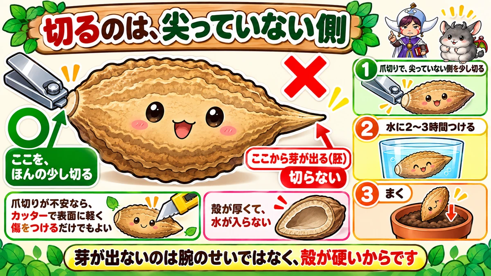
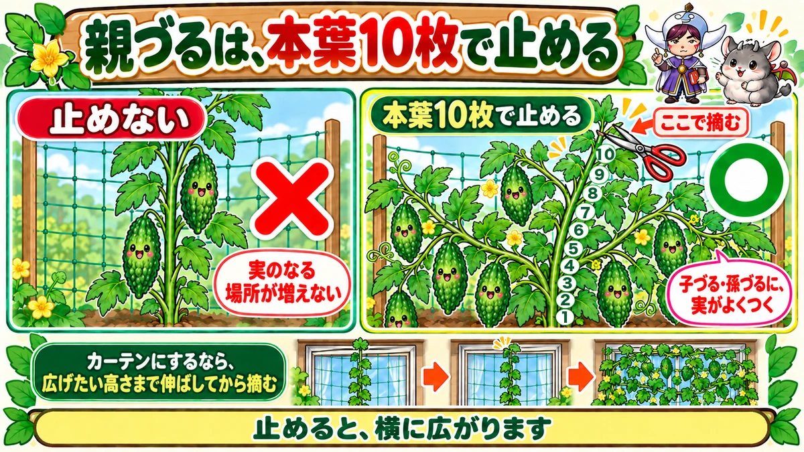
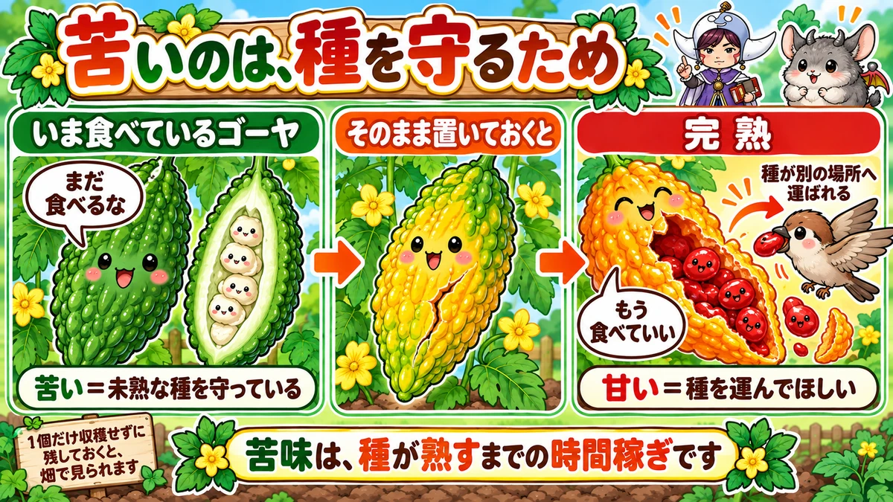

ゴーヤの種は、爪切りで削ります🌿 芽が出ないのは殻のせい
🌿「まいたのに、なかなか芽が出ない」
🌿「出ても、そこからちっとも大きくならない」
🌿「収穫し忘れたら、黄色くなって割れていた」
どうも、8150（えいこう）です🌱 家庭菜園歴8年、理科の教員免許を持っていて、有機・無農薬で野菜を育てています。
前回はズッキーニでした。今日はゴーヤです。
先に、この記事でいちばん言いたいことを言っておきますね。
★ゴーヤは、発芽でほとんど決まります。
そして★芽が出ないのは、みなさんの腕のせいではありません。殻が硬いんです。爪切りが1本あれば解決します🌿
まず、ゴーヤの基本データ
3つだけ押さえてください
- 科：ウリ科（きゅうり・かぼちゃ・ズッキーニの仲間。同じ場所は2〜3年あける）
- タネまき：5月に入ってから（直まきなら5月中旬以降）
- 植え付け：5月下旬〜6月
※時期は中間地（関東〜関西の平野部）が目安。寒い地域は少し遅らせ、暖かい地域は早めに。
📖 この記事の目次
株間50〜60cm
ネットを張って育てるのが基本です。★株間は50〜60cmとってください。
つるがよく伸びるので、★ネットは高さも幅も、思っているより大きめがいいです。
品種で、苦味が変わります
意外と知られていませんが、★ゴーヤは品種で苦味がぜんぜん違います。
- ★アバシー系（沖縄）… 太くて短い。苦味が少ない。チャンプルー向き
- ★レイシ系（鹿児島）… 細長い。苦味が強い。佃煮やごま和え向き
- ★白ゴーヤ … 苦味が少なく、生でも食べられます
「苦いのが苦手だけど育ててみたい」という方は、★白ゴーヤかアバシー系を選んでください。同じ野菜とは思えないくらい違います。
★発芽しないのは、殻が硬いからです

ゴーヤの種を、見てください
まず種を手に取ってみてください。★かなり大きくて、平べったくて、そして硬いです。
トマトやレタスの種とは、まるで別物ですよね。★この厚い殻が、水を通しにくいんです。
種が芽を出すには、まず水を吸う必要があります。★吸えなければ、いつまでも動きません。
だから、傷をつけます
そこで★「芽出し」という作業をします。人の手で、水の入り口を作ってやります。
やり方は簡単です。
- ★爪切りで、種の殻を少し切る
- ★そのあと、水に2〜3時間つける
これだけです。切ったところから水が入って、発芽がそろいます。
★切る場所に、注意してください
ここだけ間違えないでください。
種をよく見ると、★片方の端が少し尖っています。
★この尖ったほうから、芽が出ます。だから★尖っていない側を切ってください。
爪切りが怖いという方は、★カッターで表面に軽く傷をつけるだけでもかまいません。目的は「水が入る道を作ること」です。
出たあとも、ゆっくりです
無事に芽が出ても、しばらくは変化がありません。
★ゴーヤは初期の成長が、本当にゆっくりです。
私は1年目、「これは失敗したな」と思って、隣に別の苗を植えてしまいました😅 ★その後、ゴーヤは普通に育って場所が足りなくなりました。
★焦らないでください。あとから、びっくりするほど伸びます。
★急いでまく必要は、ありません
暑くなってからが本番
ゴーヤは熱帯アジア生まれです。★育つのにちょうどいい温度は25〜30℃。
つまり★日本の真夏が、ゴーヤにとっての普通です。
春先にまいても、寒くて動きません。★5月に入ってからで十分です。
★日が短くなると、実がつく
もうひとつ、面白い性質があります。
★ゴーヤは短日植物です。日の長さが短くなってくると、実をつけやすくなります。
日本でいちばん日が長いのは6月下旬。★そこを過ぎて、7月後半から9月にかけてが、ゴーヤの本番です。
だから★「まくのが遅れたかも」と焦らなくて大丈夫。5月にまけば、ちゃんと間に合います。
★親づるは、本葉10枚で止めます

止めると、横に広がります
つるが伸びてきたら、ひと手間かけます。
★本葉が10枚くらいになったところで、先端を摘みます。
すると★葉の付け根から、子づるが左右に伸びてきます。さらにその先から孫づるが出て、どんどん広がります。
なぜ止めるのか
ゴーヤは★子づる・孫づるに実がよくつきます。
親づる1本をまっすぐ伸ばしても、実のつく場所が増えません。★摘心は、実のなる枝を増やす作業です。
緑のカーテンにするなら
日よけが目的の場合は、少しやり方を変えます。
★広げたい高さまで、親づるをそのまま伸ばします。
窓の上まで届いたところで摘心すると、★そこから左右に広がって、面ができます。目的の場所で止める、と覚えてください。
ちなみにゴーヤの葉は、風が通ると★ふわっといい香りがします。窓辺で育てる楽しみのひとつです☺️
あとは、放っておいて大丈夫
摘心が終われば、あとは自由に伸ばして構いません。
★やることは収穫と水やりだけになります。ここまで来ると、ゴーヤはとても手のかからない野菜です。
水は、葉の枚数に合わせます
葉が増えたら、水も増やす
ゴーヤの水やりには、分かりやすい目安があります。
★葉の枚数に比例させてください。
葉は水を蒸発させています。★葉が10枚のときと100枚のときでは、必要な水が全然違います。
盛夏は、朝夕2回のことも
真夏、葉が茂りきったころは、★1日2回になることもあります。
とくに★プランターや緑のカーテンは乾きが早いです。土の表面を触って、乾いていたらやってください。
根は、浅く張ります
もうひとつ。★ゴーヤの根は浅く張ります。
だから★水はけの悪い場所は苦手です。うねを少し高くしておくと安心です。
「乾きやすいのに、水はけがいい土がいい」。★矛盾しているようですが、要は水が動く土がいい、ということですね。
学ぶ：苦いのは、時間稼ぎです🔬

なぜ、あんなに苦いのか
ゴーヤはなぜ苦いのでしょう。あれだけ苦い野菜も珍しいですよね。
答えは★種を守るためです。
種が未熟なうちは、食べられたくない
植物にとって、実は★種を運んでもらうための道具です。
でも★種がまだ未熟なうちに食べられたら、意味がありません。芽が出ない種をばらまかれるだけです。
だから★実が若いうちは、苦くしておきます。「まだ食べるな」という合図ですね。
★完熟すると、甘くなります
そして、ここからが面白いところです。
収穫せずに置いておくと、ゴーヤは★黄色くなって、やがてパカッと割れます。
★中の種は、真っ赤な甘いゼリーに包まれています。
苦味は消えています。★今度は「食べてください」に変わるわけです。
赤くて甘ければ、鳥が食べてくれます。★種は運ばれて、別の場所に落ちる。これがゴーヤの作戦です。
実物で確かめられます
これは、ぜひやってみてほしいです。
★1個だけ、収穫せずに残しておいてください。
黄色くなって、割れて、赤いゼリーが出てきます。★なめてみると、本当に甘いです。
お子さんと一緒なら、これ以上の教材はないと思います。★苦い野菜が甘くなる瞬間を、目で見られますから☺️
まとめ
ここまで読んでくださって、ありがとうございます！
- ★ゴーヤはウリ科。株間50〜60cm、ネットを張って育てる
- ★品種で苦味が違う。苦手ならアバシー系か白ゴーヤ
- ★種の殻が厚くて、そのままでは発芽しにくい
- ★爪切りで殻を少し切る。切るのは尖っていない側
- ★切ったあと水に2〜3時間つける
- ★芽が出てからも成長はゆっくり。焦らない
- ★タネまきは5月から。急がなくていい
- ★短日植物なので、7月後半〜9月が本番
- ★親づるは本葉10枚で摘心する
- ★子づる・孫づるに実がよくつく
- ★緑のカーテンは、広げたい高さまで伸ばしてから摘心
- ★水やりは葉の枚数に比例させる
- ★根が浅いので、水はけのよいうねに
- ★苦味は、未熟な種を守るための防御
- ★完熟すると黄色く割れて、種が赤い甘いゼリーに包まれる
全部やろうとしなくて大丈夫です。まずは★来年まく種を1粒、爪切りで削ってみてください。芽の出方が変わります🌿
次回は、連作障害の話です。★同じ場所で作り続けると、なぜ育たなくなるのかをお話しします🌱
アーチ支柱
緑のカーテンにするなら、最初に骨組みを決めてしまうほうがきれいに仕上がります。


つるものネット
ゴーヤは巻きひげで登ります。ネットの目が粗いほうがつかまりやすいです。
![[商品価格に関しましては、リンクが作成された時点と現時点で情報が変更されている場合がございます。]](https://hbb.afl.rakuten.co.jp/hgb/56d221a0.da732c49.56d221a1.b57a6709/?me_id=1230952&item_id=10006162&pc=https%3A%2F%2Fthumbnail.image.rakuten.co.jp%2F%400_mall%2Fnou-nou%2Fcabinet%2Fnousi2%2F0108008000005.jpg%3F_ex%3D240x240&s=240x240&t=picttext "[商品価格に関しましては、リンクが作成された時点と現時点で情報が変更されている場合がございます。]")
液体肥料
夏のあいだ穫り続けるので、途中で切らさないように。薄めを回数多くが基本です。
![[商品価格に関しましては、リンクが作成された時点と現時点で情報が変更されている場合がございます。]](https://hbb.afl.rakuten.co.jp/hgb/56bc2da1.2bf36c6e.56bc2da2.7b66fad7/?me_id=1347284&item_id=10000008&pc=https%3A%2F%2Fthumbnail.image.rakuten.co.jp%2F%400_mall%2Fmandahakko%2Fcabinet%2Fsyokubutsumanda%2F260306_smn_amn5004.jpg%3F_ex%3D240x240&s=240x240&t=picttext "[商品価格に関しましては、リンクが作成された時点と現時点で情報が変更されている場合がございます。]")
あわせて読みたい